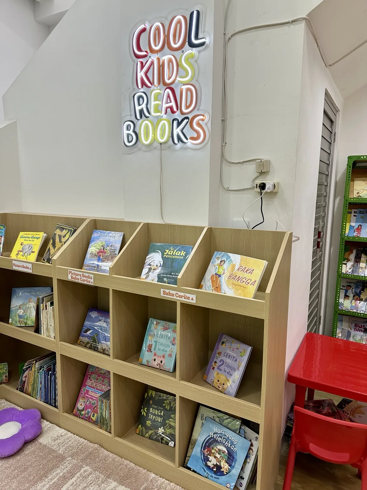
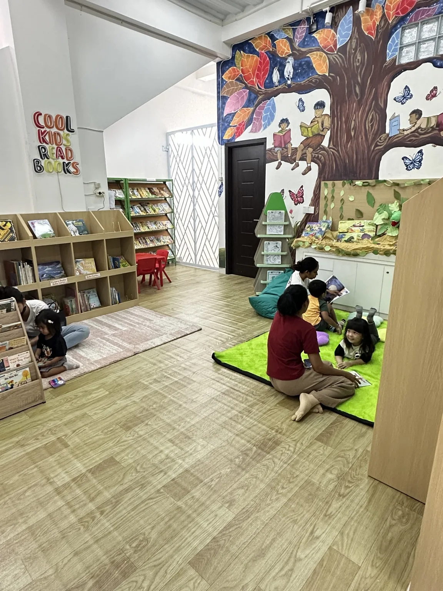
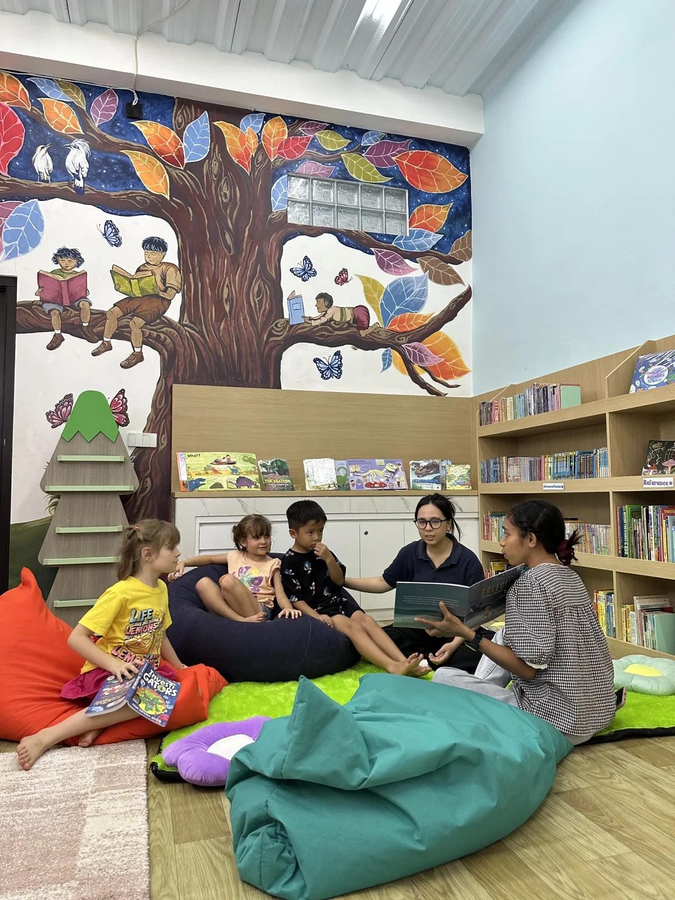
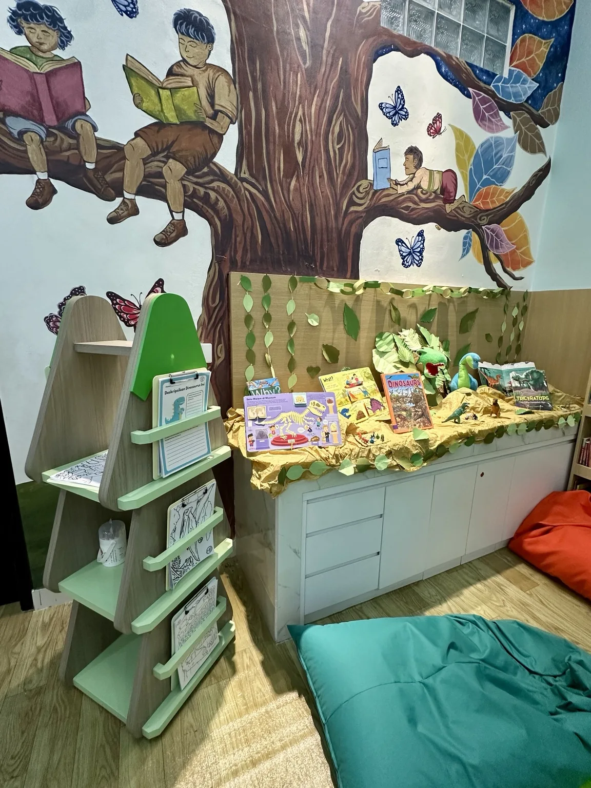
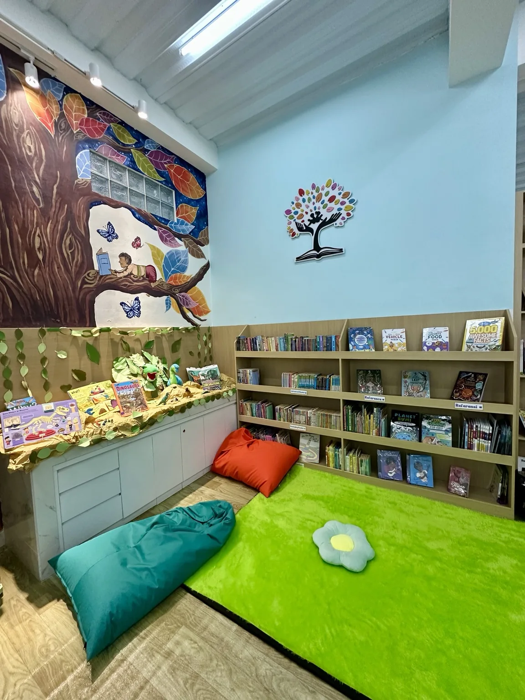
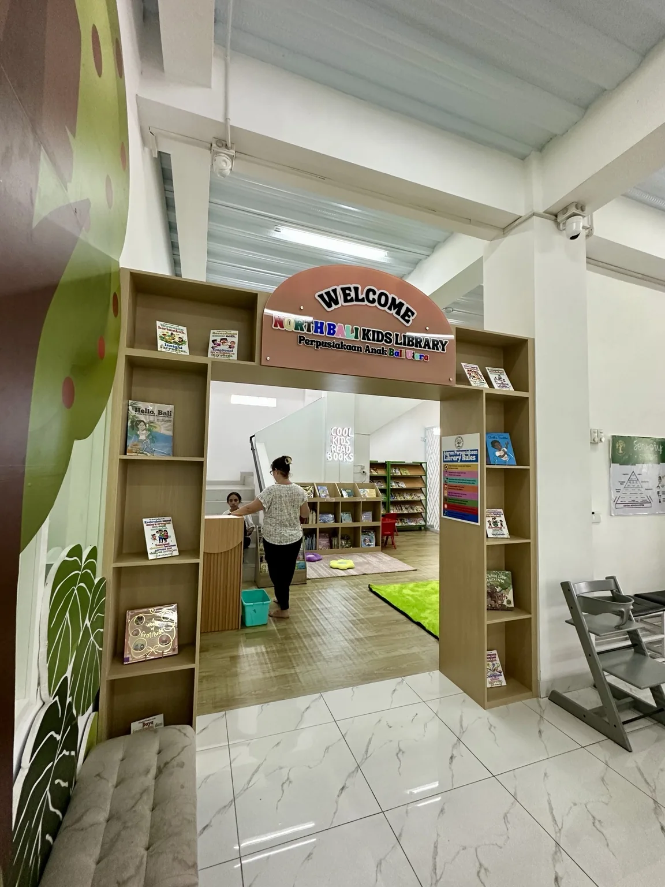

Discover Books
Explore picture books, stories and fascinating facts in Indonesian, English, Balinese and Mandarin.
A joyful, welcoming space for children to fall in love with books, discover new ideas, and let their imaginations grow.
✦ Free reading on-site

Located inside Wonder Tree Kids Center in Singaraja, North Bali Kids Library is a welcoming reading space for children and families. We believe every child deserves access to stories that inspire curiosity, creativity and a lifelong love of reading.
Reading inside the library is free. Come browse, find a cozy spot, and enjoy discovering books together.
A welcoming corner for curious minds and shared discoveries.

Explore picture books, stories and fascinating facts in Indonesian, English, Balinese and Mandarin.
Stories come alive through shared reading, imagination and engaging literacy activities.

Discover themed displays, arts, crafts and activities that make reading an adventure.
Real moments and spaces from North Bali Kids Library.


Find us inside Wonder Tree Kids Center in Singaraja, North Bali.
Jl. A. Yani No. 2, Banyuasri, Kec. Buleleng, Kabupaten Buleleng, Bali 81119
Inside Wonder Tree Kids Center, Singaraja.
Please check our Google Maps listing or Instagram for the latest opening hours and activities.